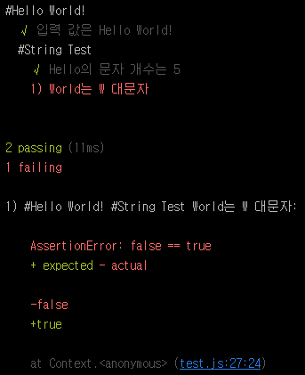

Mocha Tutorial - Step 01. Hello World!
Basic
새로운 기술. 프로그램 언어를 입력할 때에는 항상 나타나는 Hello World. Mocha의 가장 기초 코드와는 거리가 멀지만 그래도 Hello World를 고집해 보겠다. JavaScript 단위 테스트 프레임워크 - Mocha에서 Mocha를 설치하였다.
이제 프로젝트에 필요한 기본 폴더를 구성하자. 먼저 Mocha_test라는 폴더를 만들자.
1 | $ C:\Mocha_test |
해당 폴더에 test.js를 생성하여 아래와 같이 작성하자.
1 | var assert = require('assert'); |
위 코드는 Mocha의 가장 기본 코드이다. Mocha는 describe()와 it()으로 테스트 스위트와 유닛 테스트를 정의하고 실행한다. Mocha는 BDD 스타일을 기본으로 하고 있지만 TDD 스타일도 지원하고 있다. 해당 강좌에서는 위와 같이 BDD 스타일로 작성하도록 하겠다.
Assertion
위 코드에서는 Node.js에 내장된 Assetion library를 사용하였지만 Mocha의 장점 중인 하나가 Assertion library와 독립적으로 사용할 수 있다는 것이다. 즉, mocha는 외부 Assertion library와 같이 사용할 수 있다. 아래에는 mochajs.org에 리스팅 되어 있는 Assertion library이다.
should.js - BDD 스타일의 Assertions
expect.js - expect() 스타일의 Assertions
chai - expect(), assert(), should-style의 Assertions
better-assert - C-style 자체 문서화 된 assert()
unexpected - 확장 가능한 BDD Assertion Toolkit
이제 위에서 생성한 test.js를 실행해 보도록 하겠다. 해당 경로에서 Mocha를 실행한다.
1 | $ mocha |
기본적으로 Mocha 실행 시 test.js 파일을 실행한다. 하지만 특정 파일도 실행할 수 있다.
1 | $ mocha test.js |
1 passing으로 통과되었다는 뜻이다.

describe()
하나의 describe() 안에는 여러 개의 describe()를 가질 수가 있고, it() 역시 여러 개를 가질 수도 있다.
예제를 보자.
1 | var assert = require('assert'); |
#Hello World!의 테스트 스위트는 #String Test라는 테스트 스위트를 가지고 있다. 그리고 #String Test는 두 개의 it()을 가질 수 있는 것을 볼 수 있다.
위 예제에서는 오류가 발생하도록 되어있다. 결과를 보도록 하자.

2 passing에 1 failing
NPM으로 실행하기.
지금까지 우리는 test.js를 $ mocha test.js 또는 $ mocha를 통해 실행했다. 하지만 Mocha 역시 Node.js의 하나의 모듈이기 때문에 npm으로 실행을 할 수 있다. npm을 조금 다뤄보았다면 모두 아는 내용이지만 그래도 -내 맴대로- 포스트를 하겠다.
처음 JavaScript 단위 테스트 프레임워크 - Mocha에서 우리는 Mocha를 설치하기 전에 $ npm init을 통해 package.json을 생성하였다. 생성된 package.json 파일을 보면 scripts라는 항목이 있는데 우리는 이것을 npm으로 실행하면 끝!.
1 | { |
1 | $ npm test |
결과는 같으며 실행 방식의 차이이다.
이것으로 가장 간단한 Mocha의 사용법을 익혔다. 이제 Mocha를 사용하면서 필요한 Assertion library를 사용해 볼 차례이다.